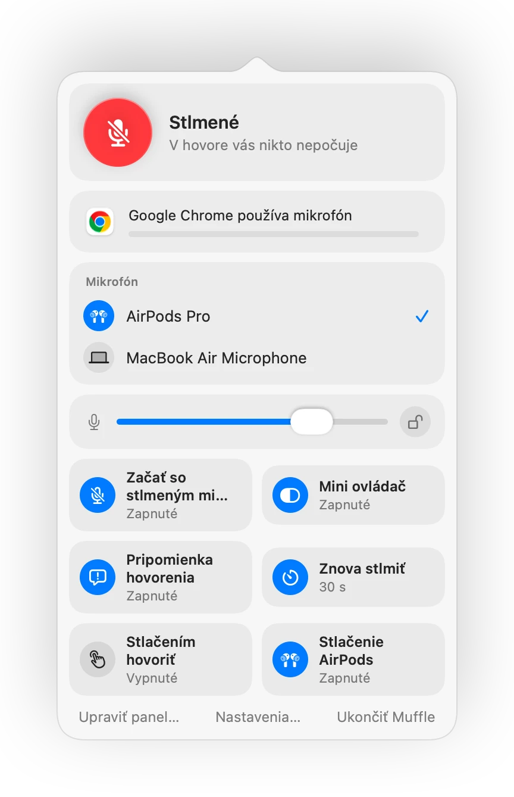

Ako stlmiť Zoom cez AirPods alebo klávesovú skratku na Macu
Vlastná skratka Zoomu Command-Shift-A funguje iba vtedy, keď je Zoom aktívnym oknom v popredí. Keď si robíte poznámky alebo zdieľate iné okno, hľadanie tlačidla na stlmenie vás stojí cenné sekundy.
Muffle vám dáva jedno ovládanie stlmenia pre Zoom aj každú ďalšiu aplikáciu: cez AirPods, globálnu klávesovú skratku alebo lištu s ponukami. Vypína priamo mikrofón, takže funguje v aplikácii Zoom aj pri hovoroch v prehliadači.
Stlmenie Zoomu odkiaľkoľvek
- 1
Nainštalujte Muffle a povoľte prístup k mikrofónu.
- 2
Pripojte sa k stretnutiu v Zoome ako zvyčajne.
- 3
Stlačte stopku AirPods alebo skratku Control-Option-M a mikrofón stlmíte z ľubovoľnej aplikácie.
- 4
Keď je mikrofón stlmený, podržaním skratky Control-Option-M môžete hovoriť a po jej uvoľnení sa znova stlmí.

- Ak Zoom na vašom Macu zachytáva stlačenie AirPods sám, klávesová skratka a lišta s ponukami vás cez Muffle spoľahlivo stlmia.
- Zoom môže ukazovať, že mikrofón je zapnutý, aj keď ho Muffle vypol. Účastníci vás vtedy nepočujú.
Časté otázky
Nahrádza Muffle tlačidlo na stlmenie v Zoome?
Funguje popri ňom. Muffle vypína mikrofón pre všetky aplikácie, takže Zoom stlmíte bez toho, aby ste sa doň museli prepnúť.
Dá sa v Zoome použiť podržanie na hovorenie?
Áno. Keď je mikrofón stlmený, podržte skratku Muffle a hovorte. Funguje to v Zoome aj v každej inej aplikácii.